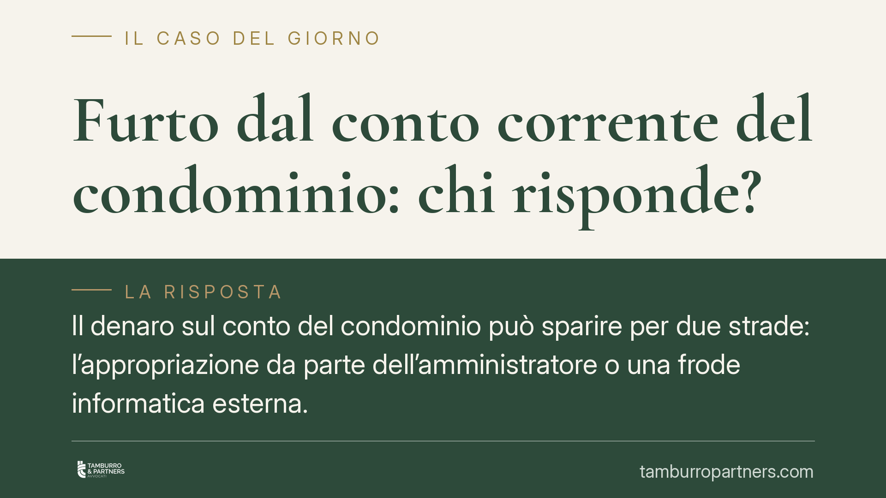

Furto dal conto corrente del condominio: chi risponde?
Il denaro sul conto del condominio può sparire per due strade: l'appropriazione da parte dell'amministratore o una frode informatica esterna. Cambiano la norma applicabile, i soggetti responsabili e i rimedi. Capire la differenza è il primo passo per reagire nei tempi giusti e recuperare le somme.

Due scenari distinti
Quando dal conto corrente condominiale escono somme non dovute, la causa rientra quasi sempre in una di due ipotesi. La prima è interna: l'amministratore utilizza per sé il denaro che detiene per conto dei condomini. La seconda è esterna: un terzo accede illecitamente al conto tramite tecniche di frode informatica. Le due situazioni seguono regole diverse e vanno affrontate con strumenti diversi.
Appropriazione indebita dell'amministratore
L'amministratore riceve e gestisce il denaro dei condomini: ne ha un possesso lecito. Se lo distrae a fini propri, commette appropriazione indebita, punita dall'art. 646 c.p. L'elemento tipico è proprio questo: il possesso nasce legittimo, l'uso diventa illecito. Secondo l'orientamento della Cassazione penale, la condotta si consuma nel momento in cui il denaro viene stabilmente sottratto alla sua destinazione (per i riferimenti puntuali si rinvia alla giurisprudenza di legittimità, da verificare nel caso concreto).
A presidio di questa gestione, l'art. 1129, comma 7, c.c. impone all'amministratore di far transitare le somme condominiali su un conto corrente dedicato, intestato al condominio. Ogni condomino ha diritto di prenderne visione. Il conto dedicato non è un adempimento formale: rende tracciabili i movimenti e facilita l'emersione delle anomalie.
In questo scenario la banca, di regola, non risponde dell'appropriazione: le operazioni sono autorizzate da chi ha legittimo potere di firma. Il quadro cambia se l'intermediario ha omesso la vigilanza su movimenti palesemente anomali o ha consentito l'operatività su un conto non dedicato, in violazione della normativa di trasparenza: in tali casi può profilarsi un concorso di responsabilità, da valutare caso per caso.
Frode informatica esterna
Nell'ipotesi del *phishing* o del *SIM swap* (sostituzione fraudolenta della scheda telefonica per intercettare i codici di autenticazione), il denaro esce a seguito di operazioni non autorizzate dal titolare del conto. Qui la disciplina di riferimento è il D.Lgs. 11/2010.
Tre articoli governano la materia. L'art. 10 pone a carico del prestatore di servizi di pagamento l'onere di provare che l'operazione è stata autenticata e correttamente registrata: non basta che la procedura tecnica sia andata a buon fine. L'art. 11 stabilisce che, per le operazioni non autorizzate, l'intermediario rimborsa l'importo, salvo il legittimo sospetto di frode del cliente. L'art. 12 individua il limite: l'utente sopporta le perdite solo in caso di dolo o colpa grave nella custodia dei dispositivi di sicurezza; al di fuori di queste ipotesi, la perdita resta in capo all'intermediario.
Su queste basi l'orientamento consolidato dei Collegi dell'Arbitro Bancario Finanziario tende a ripartire la responsabilità valutando in concreto la condotta dell'utente e l'adeguatezza dei presìdi di sicurezza adottati dalla banca.
I termini: un passaggio decisivo
C'è un adempimento da non trascurare. L'art. 9 del D.Lgs. 11/2010 richiede di comunicare l'operazione non autorizzata senza indugio dopo averne avuto conoscenza e, in ogni caso, entro tredici mesi dalla data di addebito. Decorso tale termine, il diritto alla rettifica si perde. La tempestività incide anche sulla valutazione della diligenza del titolare.
Implicazioni pratiche
Per il condominio, la differenza tra i due scenari è sostanziale. Nell'appropriazione dell'amministratore il percorso è anzitutto penale (denuncia-querela) e civile (recupero delle somme, revoca). Nella frode informatica la via è il reclamo all'intermediario e, in caso di rigetto, il ricorso all'ABF o al giudice, entro i termini indicati. In entrambi i casi la documentazione dei movimenti e del conto dedicato è l'elemento che fa la differenza.
Cosa fare in concreto
- Verificare periodicamente l'estratto conto del conto condominiale dedicato e segnalare subito ogni movimento anomalo.
- Comunicare l'operazione non autorizzata all'intermediario senza indugio e comunque entro tredici mesi dall'addebito, conservando prova dell'invio.
- Conservare reclami, risposte della banca e documentazione delle operazioni contestate.
- Valutare la denuncia-querela ex art. 646 c.p. se emerge una distrazione di fondi da parte dell'amministratore.
- Richiedere, in assemblea, l'esibizione della documentazione del conto dedicato prevista dall'art. 1129, comma 7, c.c.
È opportuno non attendere la fine della gestione per controllare: l'anticipazione dei controlli riduce il danno e amplia i margini di recupero.
Disclaimer
Contributo informativo a cura di Tamburro & Partners - Avv. Giuseppe Tamburro. Non costituisce parere legale.
Ogni condominio ha una storia a sé.
Se gestisci un'amministrazione e vuoi un confronto su una specifica questione condominiale, scrivi allo studio. Ti rispondiamo entro un giorno lavorativo.